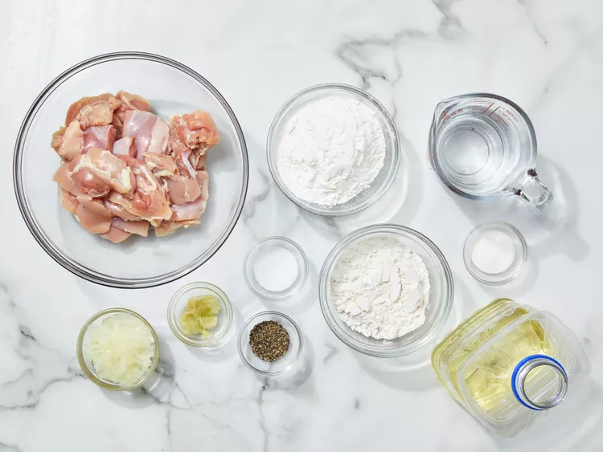
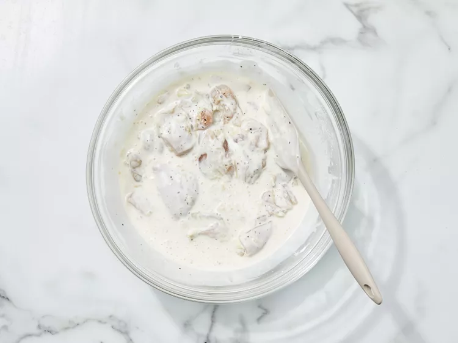
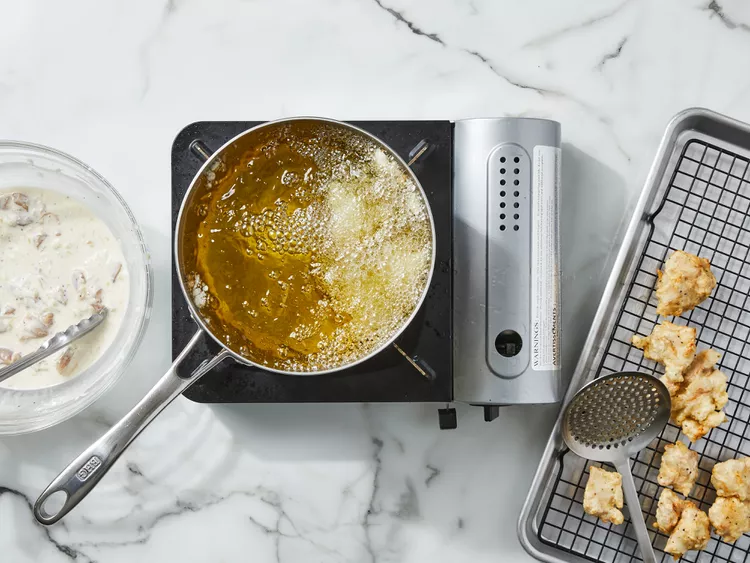
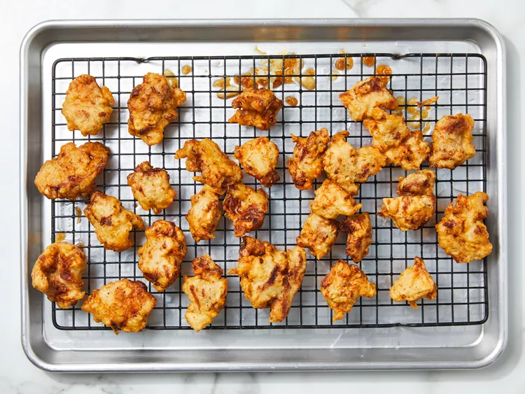

Gather all ingredeients
Make marinade: Stir together chicken, onion, garlic, salt, and pepper in a medium bowl until chicken is coated. Cover the bowl with plastic wrap and refrigerate, 4 hours to overnight.
Heat oil in a deep fryer or large saucepan to 340 degrees F (171 degrees C).
While oil is heating, make the batter: Whisk cornstarch, flour, sugar, pepper, and salt together in a large bowl. Gradually whisk in cold water until mixture resembles a smooth batter. Use tongs to remove chicken from marinade to batter; stir to coat chicken completely. Discard marinade.
Working in batches, fry chicken in hot oil for 4 minutes. Transfer chicken to a cooling rack.
Increase oil temperature to 375 degrees F (190 degrees C).
Working in batches, fry chicken again in hot oil until golden brown and crispy, 3 to 4 minutes. Transfer to a wire rack to drain.
Enjoy